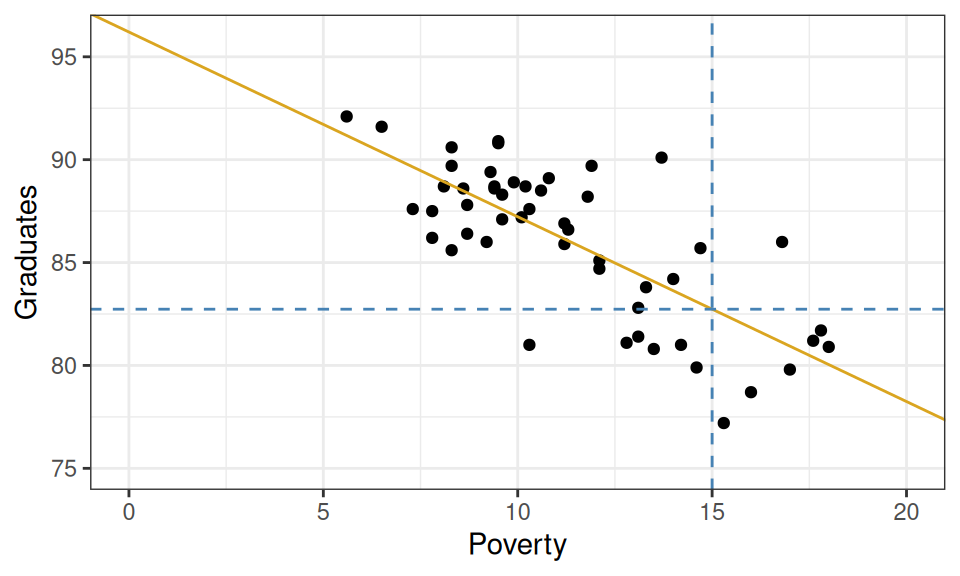
Improving Predictions and Overfitting
\(R^2\), Adding complexity, Overfitting.
WarningAfter reading, you should be able to explain the following…
- RMSE
- \(R^2\) to measure improvement over baseline
- Improving predictions by adding features
- Improving predictions by making the function more complex
- Overfitting
- Train and Test Set
- Best-model selection. Tuning.
In the last lecture we built our first prediction machine: a line drawn through the sample, on a scatter plot, that minimizes the sample mean squared prediction (MSE). In these lecture notes we focus on two questions: How can we evaluate the quality of our predictions? And how can we improve them?
Evaluating the goodness of your predictions
Once you have fitted a model to a scatter plot (sample), i.e. minimized sample MSE, you are able to answer questions such as:
What graduation rate would you predict for a state with a poverty rate of 15%?
Graphically, this can be done by drawing a vertical line from where the poverty rate is 15% and finding where that line intersects your linear model. If you trace from that intersection point horizontally to the y-axis, you’ll find the predicted graduation rate.
From the plot above, we can tell that the model yields a prediction around roughly 82.5%. To be more precise, we could plug the x-value into our equation for the line and solve.
\[ \hat{Y}_{OLS}(X=15) = 96.2 + (-0.89) \cdot 15 = 82.85 \]
So how good of a prediction is 82.85%? Until we observe a state with a poverty rate of 15%, we’ll never know! What we can know for now, however, is how well our model would have predicted the data that we do have: the sample. For those observations, we have both the predicted (or fitted) values \(\hat{Y}_i\) as well as their actual y-values \(Y_i\). These can be used to calculate the (now optimal!) MSE.
And in fact we’ll add a slightly more meaningful quantity derived from the MSE: the RMSE.
def: Sample Root Mean Squared (Prediction) Error (RMSE)
\[ \widehat{\mbox{RMSE}} \equiv \sqrt{\widehat{\mbox{MSE}}} \]
Why am I saying that this is more meaningful?
Hint. Check the units of measurement… Or, remember why we take the square root of the Variance …?
However, we can go the extra mile and compute another statistic that measures the predictive power of our model in an even more meaningful way.
Measuring explanatory power vs. baseline: \(R^2\)
\(R^2\) is a statistic that captures how good the predictions from your linear model are (\(\hat{Y}(\mathbf{X})=\hat{Y}_{OLS}(\mathbf{X})\)) by comparing them with another even simpler, unexciting, model which we briefly talked about last time, the overall sample average: \(\hat{Y}(\mathbf{X})=\bar{Y}\) (the baseline model). To understand how this statistic is constructed please watch this short video, “R^2”, found in the Media Gallery on bCourses (14 minutes).
def: R-squared (\(R^2\))
A sample statistic that measures the proportion of the total variability in the \(Y\)-variable (which is the same as the MSE from the baseline model) that goes away by using our model involving the \(X\) variables (MSE from the regression model).
\[ \begin{aligned} R^2 (\mbox{your model}) &\equiv \frac{\mbox{decrease in MSE}}{\mbox{old MSE}} =\frac{\widehat{\mbox{MSE}}_{\mbox{baseline}}-\widehat{\mbox{MSE}}_{\mbox{your model}}}{\widehat{\mbox{MSE}}_{\mbox{baseline}}} =\\ &= 1 - \frac{\widehat{\mbox{MSE}}_{\mbox{your model}}}{\widehat{\mbox{MSE}}_{\mbox{baseline}}} \end{aligned} \]
so \[ R^2 (\mbox{OLS}) \equiv 1 - \frac{\widehat{\mbox{MSE}}(\hat{Y}_{OLS})}{\widehat{\mbox{MSE}}(\bar{Y})} = 1-\frac{\sum_{i=1}^n (Y_i - \hat{Y}_{i,OLS})^2}{\sum_{i=1}^n (Y_i - \bar{Y})^2} \]
For a linear model, the sample mean error (\(\widehat{\mbox{MSE}}(\hat{Y}_{OLS})\)) can only be smaller than the sample mean error of the baseline model (\(\widehat{\mbox{MSE}}(\bar{Y})\)), because the linear model had access to all the information of the baseline model did, plus the values of the \(X\) variables, the linear model is larger, it includes the baseline model inside of it, so it just can’t do worse than the baseline!
Therefore \(R^2\) has the following properties (more in general than just for the linear model):
- \(R^2 \leq 1\). The best-case scenario is when your model has perfect MSE (\(=0\)).
- Almost always \(R^2 \geq 0\). In principle, you could have picked such a terrible model that it does worse than the baseline. In which case you’d get a negative \(R^2\).
- \(R^2\) near \(1\) means predictions were much more accurate than the baseline.
- \(R^2\) near \(0\) means predictions were barely more accurate than the baseline.
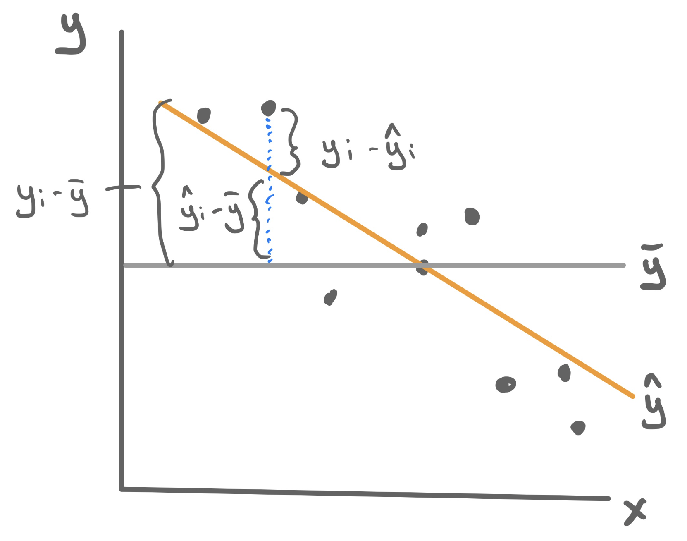
Example: Poverty and Graduation
To fit the least squares linear regression model to predict graduation rate using the poverty rate, we turn to the familiar lm() function.
For this particular model, \(R^2 = .56\). This means that poverty rate is able to explain about 56% of the variability found in graduation rates. That’s a good start!
Improving predictions
\(R^2\) allows us to quantify how well the model explains the structure found in the data set. From a model-building standpoint, it gives us a goal: to find a model with the highest possible \(R^2\). Here we outline three different methods for pursuing this goal - adding predictors, transformations, and polynomials - and we’d look at a different data set for each one.
Adding Features
Let’s return to the data set that we studied when we first learned about multiple linear regression: ratings of Italian restaurants from the ZAGAT guide. For each of the 168 restaurants in the data set, we have observations on the average price of a meal, the food quality, the quality of the decor, the quality of the service, and whether it is east or west of Fifth Avenue.
# A tibble: 168 × 6
restaurant price food decor service geo
<chr> <dbl> <dbl> <dbl> <dbl> <chr>
1 Daniella Ristorante 43 22 18 20 west
2 Tello's Ristorante 32 20 19 19 west
3 Biricchino 34 21 13 18 west
4 Bottino 41 20 20 17 west
5 Da Umberto 54 24 19 21 west
6 Le Madri 52 22 22 21 west
7 Le Zie 34 22 16 21 west
8 Pasticcio 34 20 18 21 east
9 Belluno 39 22 19 22 east
10 Cinque Terre 44 21 17 19 east
# ℹ 158 more rowsMaybe we want a model that will tell us how much we will have to spend at a new restaurant that is not upfront about its pricing; or maybe we just opened a new restaurant and want to know how much customers expect to spend. So price will serve as our response variable, leaving us four possible predictor variables. Let’s fit four different regression models, each one incorporating more information by adding a feature.
m1 <- lm(price ~ food, data = zagat)
m2 <- lm(price ~ food + geo, data = zagat)
m3 <- lm(price ~ food + geo + decor, data = zagat)
m4 <- lm(price ~ food + geo + decor + service, data = zagat)Unfortunately we can’t visualize these four linear models as four lines on a scatterplot because only the first model describes a line. The second describes two parallel lines; the third describes two parallel planes in 3D; the fourth describes two parallel hyperplanes in 4D (🤯).
We can, however, compare these four models in an arena where they’re all on the same playing field: how well they predict price. To quantify that, we can calculate the \(R^2\) value for each.
model R_squared
1 m1 0.3931835
2 m2 0.3987720
3 m3 0.6278808
4 m4 0.6278809Observe that the more information we provide the model - by adding predictors - the greater the \(R^2\) becomes! This is not a particular characteristic of the ZAGAT data set but of \(R^2\) in general. Adding new predictors will never lower the \(R^2\) of a model fit using least squares.
Non-linear transformation
The world is not always linear. We can create non-linear prediction models by building off the above linear model machinery. To demonstrate how to use this approach to increase the predictive power of our model, we’ll turn to a non-linear trend that should look familiar…
A single non-linear term
Take a question from flights lab as an example where we plot the average airspeed vs. flight distance. First let’s try fitting a linear model.
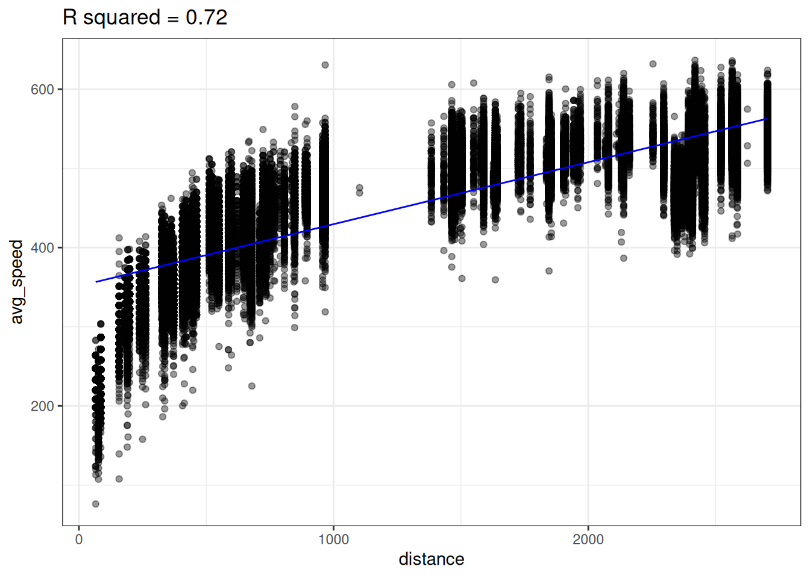
A linear model does not seem appropriate to model average speed from distance. There does appear to be a monotonically increasing trend, but it starts out steeper then flattens out1. This trend is reminiscent of functions like log or square root.
Lets try transforming our predictor (distance) with the log function to create a new variable called log_dist.
flights <- flights |>
mutate(log_dist = log(distance))We can then fit a linear model using this new log_dist variable as the predictor.
lm_speed_from_log_dist <-
lm(formula = avg_speed ~ log_dist, data=flights)Looking at the data below, we see there does seem to be a linear relationship between avg_speed and our new variable log_dist! Notice the x-axis in the below plot is log_dist whereas it was distance in the above plot.
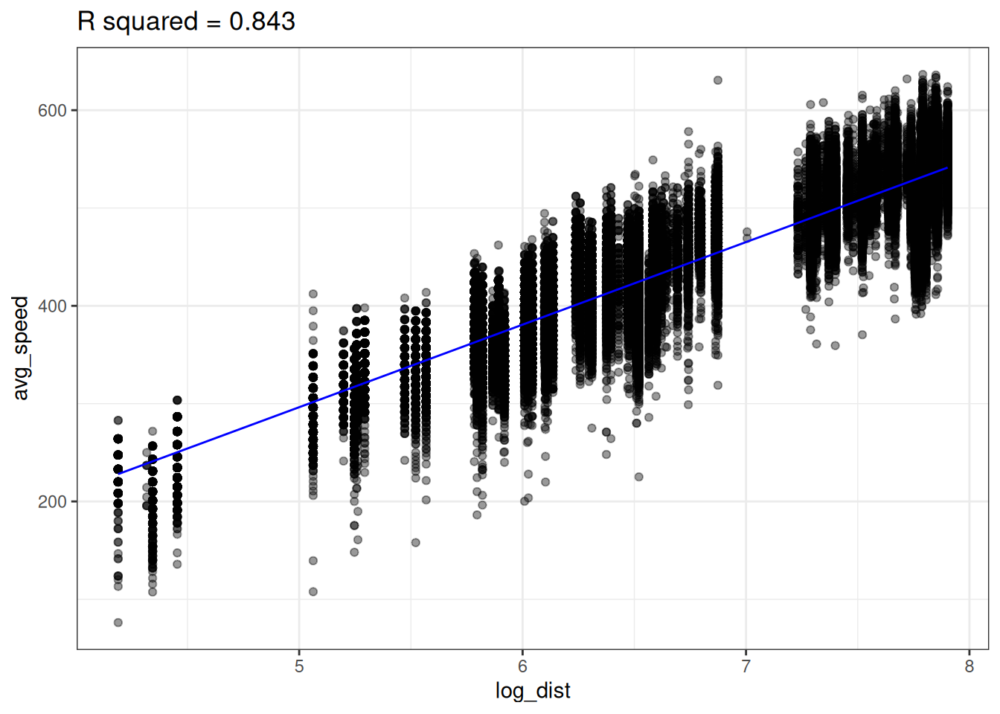
The linear model with log_dist (\(R^2=0.843\)) predicts avg_speed better than the linear model with distance (\(R^2=0.72\))
We can now think of our predictive model as
\[ \hat{Y} (X) = \hat{b}_0 + \hat{b}_1 \cdot \log(X) \]
In other words, our model is non-linear since \(X\) appears inside of a logarithm. We can plot the non-linear prediction function in the original predictor distance and we see the prediction function is curved!
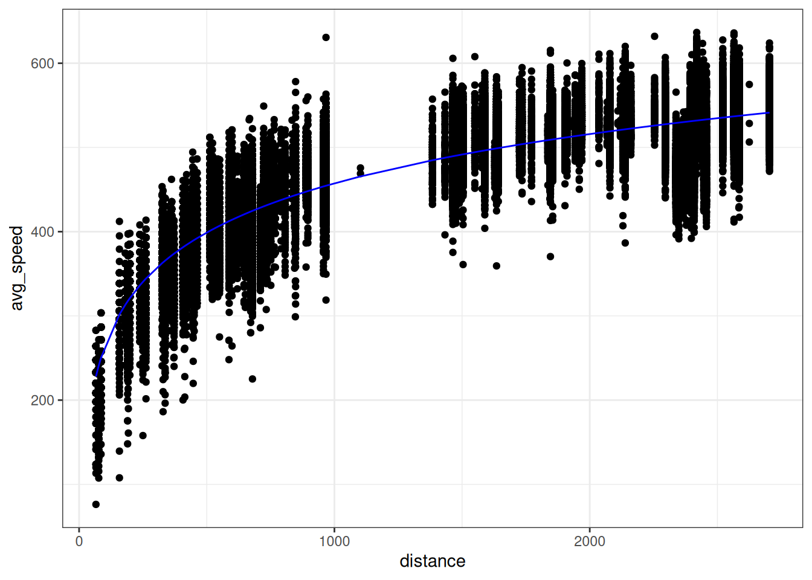
So is this a linear model or a non-linear model? It’s both. We created a new variable log_dist by transforming the original variable; the prediction function is a linear function of this new variable. But we can also think of this as a function of the original variable distance; the prediction function is a non-linear function of this original variable.
Polynomials
Sometimes we need an more complex transformation than just a simple function (e.g. \(\sqrt{x}, \log(x), x^2,...\)). Take the following example where there is a strong association between x and y, but it’s not linear (this data, admitted, was simulated in R).

So how should we model this? Polynomials to the rescue!
A polynomial is a function like
\[ f(x) = -20 + 34 x - 16 x^2 + 2 x^3 \]
More generally a polynomial is a function like
\[ f(x) = c_0 + c_1 \cdot x + c_2 \cdot x^2 + \dots + c_d \cdot x^d \]
where the \(d+1\) coefficients \(c_0, c_1, \dots, c_d\) are constants The number \(d\) is called the degree of the polynomial – this is the largest exponent that appears.
Polynomials are flexible functions that can be quite useful for modeling. We can fit a polynomial model by adding new transformed variables to the data frame then fitting a linear model with these new transformed variables. This is just like how we fit a logarithmic function before by adding a new log transformed variable to the data frame then fit a linear model.
The prediction function here is a polynomial given by
\[ \hat{Y}(X) = -20.086 + 34.669 \cdot X -16.352 \cdot X^2 + 2.042 \cdot X^3 \]
Improving a bit too much …
Below is data we collected about the association between number of hours studied and students’ test scores in a math class. Our goal is to predict the exam score from number of hours studied. Both plots below show the same data, but show the predictions from two different predictive models.
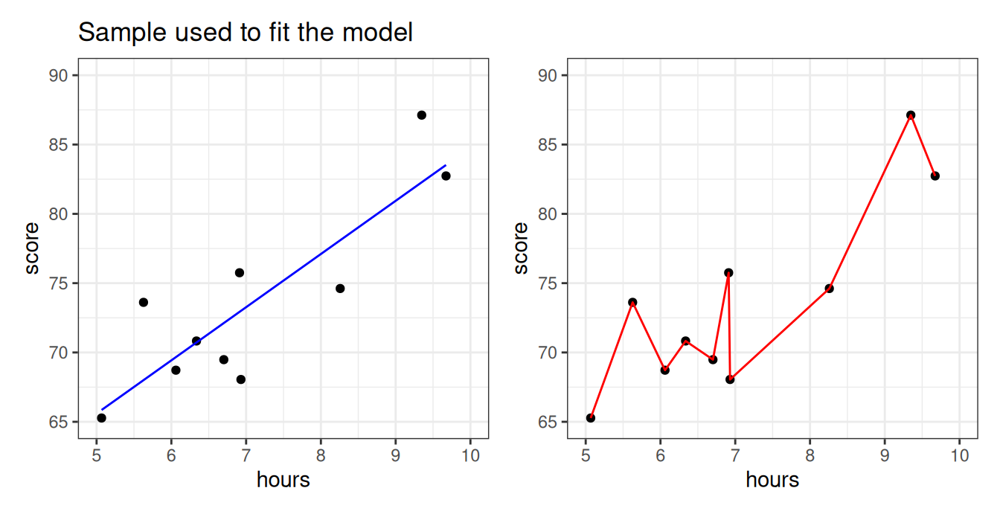
Which model looks more reasonable: the blue, or the red? More specifically,
- Does it make sense that there should be a big difference between studying 6.7 hours vs studying 6.8 hours?
- Should studying a little more make your score go down?
- Is it reasonable that every single sample data point is absolutely perfectly predicted?
The blue model seems more reasonable: studying more should steadily increase your score. The predictive model on the right seems like it took the particular data points “too seriously”! This will be an issue if a new set of students from the same class comes along and we want to predict what their exam scores will be, based on the amount of hours studied.
And yet… the sample MSE of the right-hand model is just a shocking… 0. Perfection.
What’s going on?
Let’s take a new sample and use the blue and red models we fitted before, to predict scores from this new sample from the class.
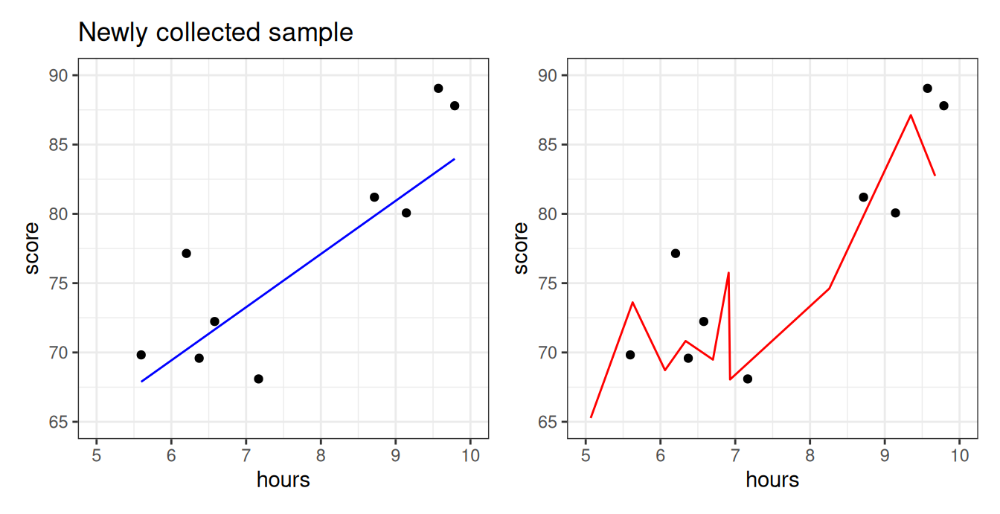
We see that the blue line is prepared to predict the exam scores okay for these students–even though the model was not fited using them! The red model, however, does poorly. It is so beholden to the old sample, the first group of students, that it doesn’t know how to manage when the students are even slightly different. In statistics, we say that the red model was overfitting.
def: Overfitting
When a predictive algorithm makes very bad predictions on a fresh new sample of data points from a population, while having a deceptively amazingly good performance on the old sample, from the same population, that we used to fit it.
\[ \mbox{"good predictions"} \rightarrow \widehat{\mbox{MSE}}(\hat{Y}\mbox{, old sample}) \ll \widehat{\mbox{MSE}}(\hat{Y} \mbox{, new sample}) \leftarrow \mbox{"bad predictions"} \]
So who’s right? The old sample or the new sample?
If I tested you on the final on the same exact questions I asked you on the quizzes, is that gonna be an accurate way of measuring your level of understanding of Statistics?
Shouldn’t I use a new set of questions? (Of the same type)
Overfitting with polynomials
Usually, overfitting occurs as a result of applying a model that is too complex, like the red one we saw for the math class data above. We created that overfitted predictive model on the right by fitting a polynomial with a high degree. Polynomials are quite powerful models and are capable of creating very complex predictive functions. The higher the polynomial degree, the more complex function it can create.
Let’s illustrate by fitting polynomial models with progressively higher degrees to the data set above.
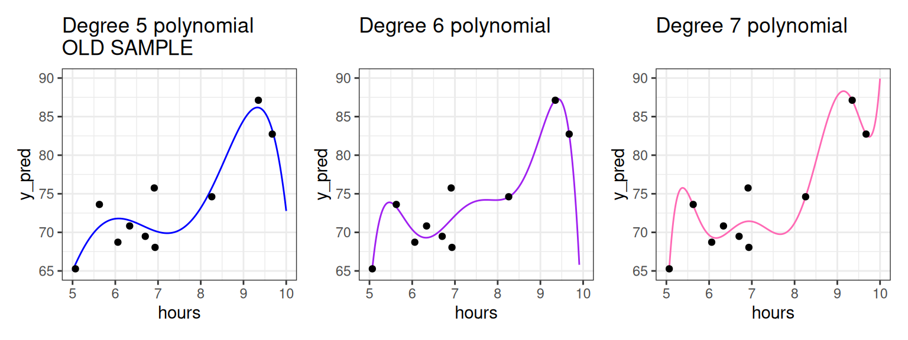
The higher the polynomial degree, the closer the prediction function comes to perfectly fitting the data2. Therefore, when it comes to evaluating which model is the best for prediction, we would say the degree seven polynomial is best. Indeed, based on our knowledge so far, it would have the highest \(R^2\). The true test is yet to come, though. Let’s measure these three models on how well they predict to the second group of students that weren’t used to fit the model.
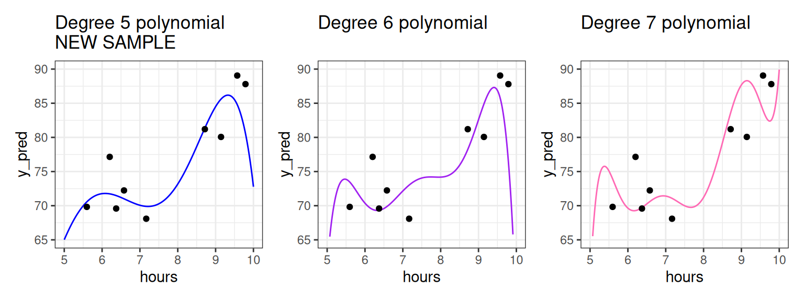
As we increase the degree, the polynomial begins to perform worse on this new data as it bends to conform to the original data. For example, we see that for the student having studied around five and a half hours, the fifth degree polynomial does well, but the seven degree polynomial does horribly! To put a cherry on top, the red model we showed you in the beginning of these notes was a twenty degree polynomial!
What we see is that the higher the degree, the more risk we run of using a model that overfits.
Divide the sample and conquer overfitting: Training vs. Test
What you should have taken away so far is the following: we should not fit the model (set the \(b_0, b_1\) coefficients) and evaluate the model (judge its performance) on the same data set (sample)!
We can further back up this idea quantitatively. The plot below shows the \(R^2\) value for math class models fit with different polynomial degrees.
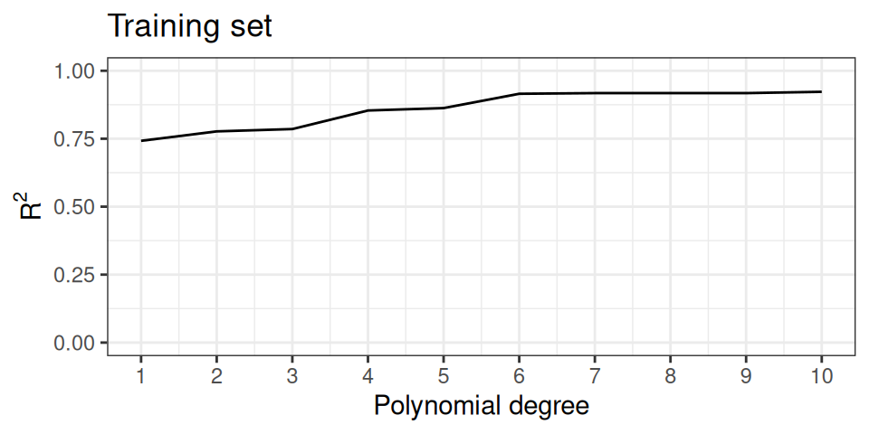
The \(R^2\) value goes steadily upwards as the polynomial degree goes up. In fact this is mathematically guaranteed to happen: for a fixed data set the \(R^2\) value for a polynomial model with higher degree will always be higher than a polynomial model with lower degree.
This should be disconcerting, especially since we earlier saw that the model with the highest \(R^2\) did the worst on our unseen data. What you might also notice is that the \(R^2\) isn’t increasing by that much between degrees as the degree gets higher. This suggests that adding that additional degree isn’t improving our general predictive power much; it’s just helping the model tailor itself to the specific data we have.
Does that mean \(R^2\) is not a good metric to evaluate our model? Not necessarily. We can just change our workflow slightly. Instead of thinking in terms of a single data set, we can partition, or split the observations of the data set into two separate sets. We can use one of these data sets to fit the model, and the other to evaluate it.
def: Training Set and Test Set
The training set is the portion of the sample used to fit a predictive model; i.e. estimate/learn the model coefficients. The test set is the portion of the sample used to estimate the goodness of a predictive model after it’s fitted.
These two sets should be non overlapping, but they should come from the same population/distribution.
The partition of a data frame into training and testing sets is illustrated by the diagram below.
| y | x1 | x2 | x3 |
|---|---|---|---|
The original data frame consists of 10 observations. For each observation we have recorded a response variable, \(Y\), and three features, \(X_1, X_2\), and \(X_3\). If we do an 80-20 split, then 8 of the rows will randomly be assigned to the training set (in blue). The 2 remaining rows (rows 2 and 6) are assigned to the testing set (in gold).
So what does \(R^2\) look like on the test set?
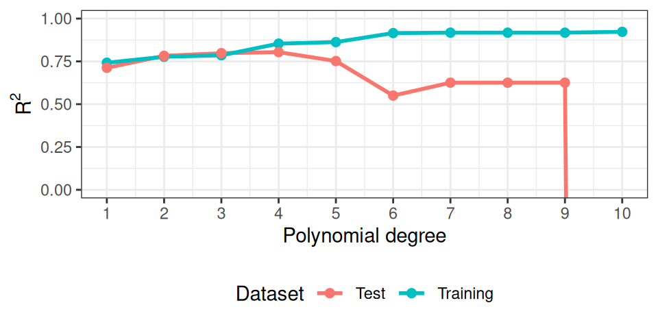
As you can see, at some point, the model starts to overfit. The test set performance degrades significantly behind the facade, as the training set keeps on deluding us with a more and more amazing \(R^2\)!
Picking the best model (tuning).
So to recap, our new workflow for predictive modeling involves:
def: Model training + testing workflow
- Split the data into a training and a testing set;
- Fit the model to the training set (training);
- Evaluate the model using the testing set (testing).
Okay, but then so what? What do we do with this information?
We could just be happy and go home with a performance measure to report, but, we have a measure for each different degree of the polynomial used, so… which degree should I use in practice? Which model should we really pick as the model to use?
Using the plot above, which polynomial degree would you use in the real world?
I’d pick the one with the best (highest) test \(R^2\)! (looks like it’s \(d=4\) to me).
But now we have a problem: what’s the performance of our best model we just picked out?
You’ll say: “just read the value of the testing \(R^2\)!”.
But, again, is it fair to use the same quantity that we just optimized, as a reasonable measure of success? Isn’t it a bit too optimistic?
How would you solve the problem? (Hint: it’s exactly the same trick again)
Create not just one but two different test sets! Use the first to pick the best model (tuning) and then the second finally to evaluate it and report the number.
This suggest the following improved extremely frequently used workflow.
def: Model training + tuning + testing workflow
- Split the data into one training, and two testing sets;
- Fit many models to the training set (training);
- Evaluate the models using the first testing set;
- Pick the model with the best performance on the first testing set (tuning);
- Evaluate the best model on the second test set (testing).
More on splitting the data
As in the diagram above, a common practice is to dedicate 80% of the observations to the training set and the remainder to the testing set (a 80-20 split), but this is not at all a rule which is set in stone.
You should select an \(n_{test}\)-sized subset from your sample that’s large enough to evaluate your performance with a small enough confidence interval (remember the \(\frac{1}{\sqrt{n_{test}}}\) factor from the generalization unit? You better…). That’s your test sample.
The rest (\(n-n_{test}\)) should be thrown into the training grinder to squeeze all the possible information out of them. That’s your training sample.
The other question is how best to assign the observations to the two sets. In general, it is best to do this uniformly randomly to avoid ending up with samples sets that are not representative of the population they came from.
Summary
We measure the goodness of our predictions with MSE (and RMSE), but also with \(R^2\), which is nice because it compares the performance of the model with the one of a baseline model (the simple average). We used \(R^2\) to follow the amazing improvements achieved by adding more features to the model, or making the prediction formula more complex, with logarithms or polynomial terms.
But we improved too much at some point, without noticing it, because we were using the same sample to optimize and to evaluate the model. This is overfitting. We fixed overfitting by splitting the sample into training and test sets, and only using the test set to evaluate the model, while the training set is only used to optimize the model.